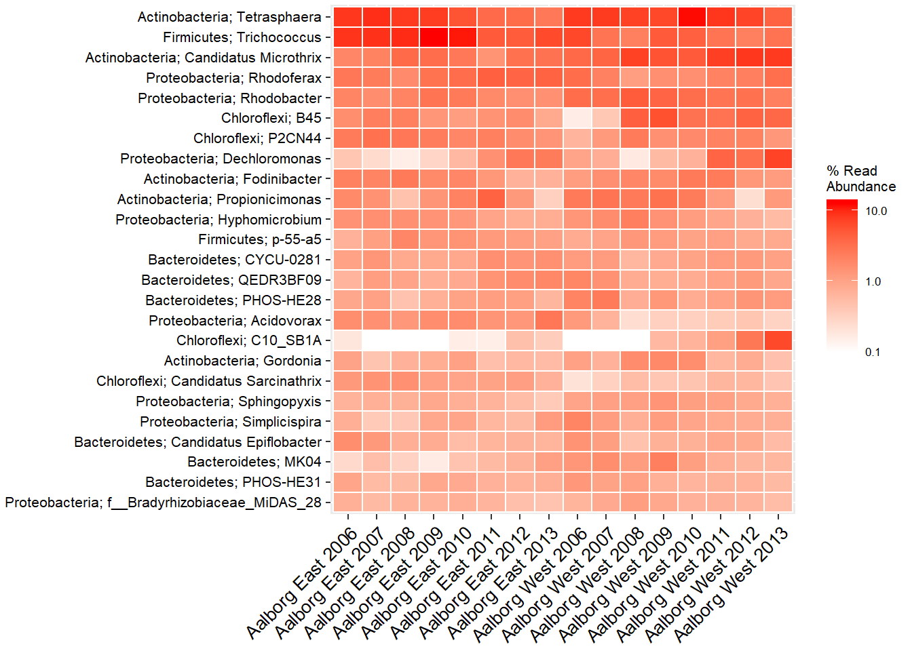

Introduction to ampvis2
This is a short guide to the basics of ampvis2, how to load data, aswell as a few basic visualisation functions using example data. A full explanation of all functions, their purpose and different arguments can be found in the Reference tab. First, install ampvis2 as described on the front page.
Loading data
The most notable change with ampvis2 is that phyloseq is no longer used to handle the data, which makes it simpler to understand and work with, and lighter. The data is simply stored as a list containing 3 dataframes (4 if reference sequences are provided) named “metadata”, “otutable” and “tax” (short for taxonomy). The data ampvis2 needs is an OTU-table generated with fx workflow scipts v.4+ and a metadata sheet containing information about the samples.
More precisely, the OTU-table provided is expected to be a raw CSV-table with OTU names/ID’s in rows and sample ID’s in columns, where numbers in the corresponding cells represent the read counts of the particular OTU in each sample. The last 7 columns of the OTU-table are expected to be the taxonomy of the corresponding OTU’s (Kingdom->Species). The metadata needs to have the same sample ID’s as in the OTU-table in the first column and then the remaining columns contain information about the samples, for example where the sample was taken, date, pH, temperature etc. First, import your data into R dataframes using an appropriate read function:
myotutable <- read.csv2("data/otutable.csv",
#sep = "\t",
#dec = ".",
header = TRUE,
stringsAsFactors = FALSE,
check.names = FALSE,
row.names = 1) %>% as.data.frame()
mymetadata <- read_excel("data/metadata.xlsx",
col_names = TRUE) %>% as.data.frame()Note that read.csv2() treats semicolon “;” as the default separator and comma “,” as decimal, which is the standard in some regions. To change the separator to fx a comma you can adjust with the argument sep = ",". Refer to the documentation with ?read.table.
After the two files have been loaded into R, check that the resulting data frames have been loaded correctly so that the first column in the otutable is a sample and not the OTU ID’s and that the first column in the metadata are the sample ID’s. Now combine the data using amp_load(), which checks the data and combines it into one object, making it easier to manipulate, filter and subset all elements of the data at once for analysis:
library(ampvis2)
d <- amp_load(otutable = myotutable,
metadata = mymetadata)
#The reference sequences can optionally be loaded with readDNAStringSet() from the biostrings package:
#d <- amp_load(otutable = myotutable,
# metadata = mymetadata,
# refseq = readDNAStringSet("data/otus.fa", format = "fasta"))The individual dataframes in the list can be explored with View(d$metadata).
Filtering and subsetting
With the ampvis2 package comes a large example data set with 573 samples taken from the activated sludge from 55 Danish Wastewater Treatment Plants in the period 2006-2013, which can be loaded with data("MiD"). The loaded data can be subsetted based on variables in the metadata using the amp_subset_samples() function, which can then be stored as a new object and analysed separately:
data("MiD") #skip this line if you are using your own data
ds <- amp_subset_samples(d, Plant %in% c("Aalborg West", "Aalborg East"))## 522 samples and 6569 OTUs have been filtered
## Before: 573 samples and 14791 OTUs
## After: 51 samples and 8222 OTUsor for a more complex subset, you can subset based on two or more variables using “&” to separate the conditions, or simply use the function more than once. The “!” (logical NOT operator) can be thought of as “except” and is useful to remove fx outliers. Furthermore, the minreads = 10000 argument removes any sample(s) with total amount of reads below the chosen threshold:
ds <- amp_subset_samples(d, Plant %in% c("Aalborg West", "Aalborg East") & !SeqID %in% c("16SAMP-749"), minreads = 10000)## 523 samples and 6602 OTUs have been filtered
## Before: 573 samples and 14791 OTUs
## After: 50 samples and 8189 OTUsThe amp_subset_taxa() function instead subsets based on the taxonomy, where you simply provide a vector with the taxa you are interested in, separated by a comma:
d_Chloroflexi_Actinobacteria <- amp_subset_taxa(d, tax_vector=c("p__Chloroflexi", "p__Actinobacteria"))The taxonomic rank is indicated by fx “p__" for phylum and “g__" for genus etc, followed by the name of the taxon (case-sensitive, first letter almost always capital). To filter individual OTUs simply provide the OTU name(s) as-is in a vector, fx c("OTU_1206").
Heatmap
All ampvis2 plots are generated using the ggplot2 package. You can change the look of the plots to better suit your needs, add more layers to the plots and use other ggplot2 functions in combination with ampvis plots if needed. Refer to the ggplot2 documentation for more information. amp_heatmap() by default aggregates to phylum level and shows the top 10 phyla, ordered by mean read abundance across all samples:
amp_heatmap(ds, group = "Plant")
There are many arguments you can use to suit your needs, for a full list see the reference (click the function names to go to its reference page). For example, you can manually select the level at which to aggregate, how many to show, add additional higher level taxonomic information, group the samples differently by the metadata, hide the values, change the colors and scaling, and much more. You can also adjust the text labels for better readability or adjust the positioning of the legend (adjusting ggplot2 plots is always done with “+” after the actual ampvis2 function):
amp_heatmap(ds,
group = c("Plant", "Year"),
tax.aggregate = "Genus",
tax.add = "Phylum",
tax.show = 25,
color.vector = c("white", "red"),
plot.colorscale = "log10",
plot.numbers = FALSE) +
theme(axis.text.x = element_text(angle = 45, size=10, vjust = 1),
axis.text.y = element_text(size=8),
legend.position="right")
Boxplots
amp_boxplot() generates boxplots, again ordered by mean read abundance across all samples:
amp_boxplot(ds,
tax.show = 20)
The arguments you can provide are similar to those used in amp_heatmap() and other ampvis2 functions:
amp_boxplot(ds,
group = "Period",
tax.show = 5,
tax.add = "Phylum")
Ordination
The amp_ordinate() function has been expanded to support 7 different ordination methods, various data transformations and interactive plots by using Plotly. By default any OTU with an abundance no higher than 0.1% in any sample is removed, which drastically improves the calculation time. You can of course adjust this threshold manually by changing the filter_species = 0.1 argument. Other than this, there are only four main arguments that are involved in the actual calculations, the rest are just various plotting features. These four are type = "", transform = "", distmeasure = "", and constrain = "" for constrained ordination (only used in Redundancy Analysis (RDA) or Canonical Correspondence Analysis (CCA)).
amp_ordinate(ds,
transform = "hellinger",
type = "PCA",
sample_color = "Plant",
sample_colorframe = TRUE,
sample_colorframe_label = "Plant") + theme(legend.position = "blank")
When analysing microbial community composition data it is recommended to use the Hellinger transformation (see Legendre et al, 2001 or Numerical Ecology for details) for most types of ordination methods except the distance-based ordination methods (Principal Coordinates Analysis (PCoA) and non-Metric Multidimensional Scaling (nMDS)), where you also have to select a distance measure manually by the distmeasure = "" argument, for example Bray-Curtis dissimilarities:
amp_ordinate(ds,
type = "pcoa",
distmeasure = "bray",
sample_color = "Plant",
sample_colorframe = TRUE,
sample_colorframe_label = "Plant",
sample_plotly = c("Year", "SeqID"))